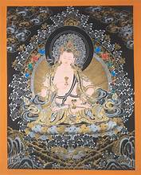
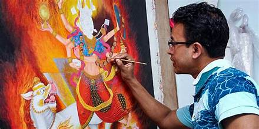

Traditional Nepali Art
Nepali art is as diverse and rich as its culture, encompassing a range of forms from traditional paintings and sculptures to modern artistic expressions. Here’s a look into some of the prominent aspects of Nepali art:
| Image | Description |
|---|---|
|  | These are intricate and colorful Buddhist paintings on cotton or silk appliqué, usually depicting a Buddhist deity, scene, or mandala. Thangkas serve both as an aid to meditative practices and as educational tools, with detailed scenes from the lives of various deities. |
|  | Similar to Thangkas, Paubha paintings are traditional religious paintings made by the Newars of the Kathmandu Valley and focus more on Hindu deities and themes. |